Barcelona
My Latest Adventure: Discovering the Charms of Barcelona
Barcelona has always been a city that captures the imagination with its vibrant energy, stunning architecture, and rich history. My latest adventure took me back to this captivating city, and once again, Barcelona did not disappoint. From wandering the narrow streets of the Gothic Quarter to marveling at Gaudí’s architectural masterpieces, every moment in Barcelona was an experience to remember.

 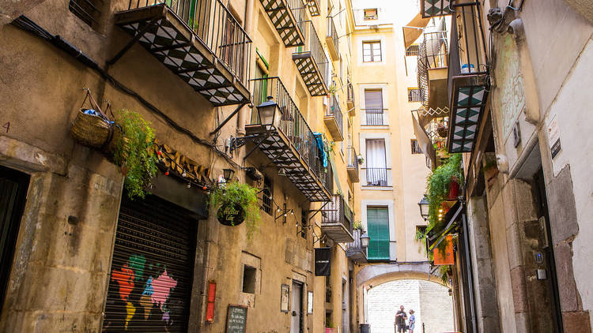
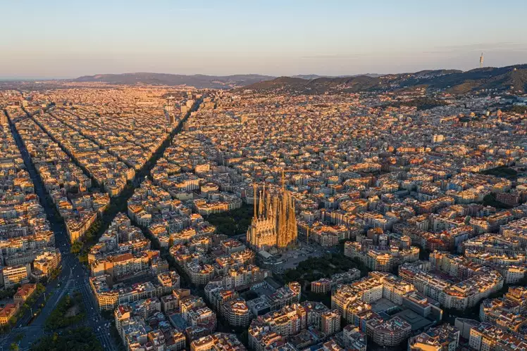
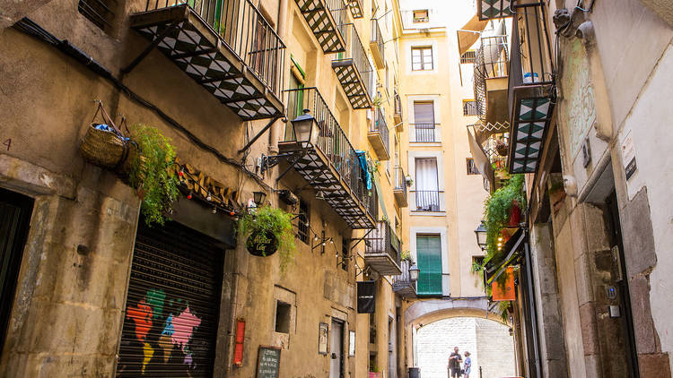
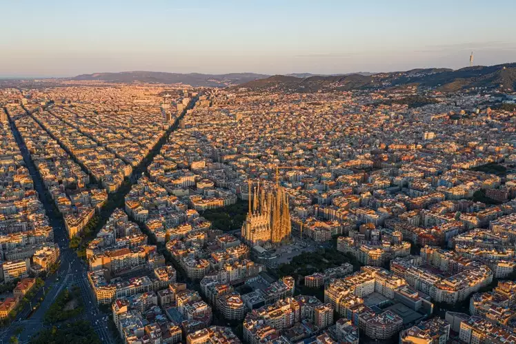
A Stroll Through History in the Gothic Quarter
I began my journey in the heart of the city, the Gothic Quarter (Barri Gòtic). As I wandered through its labyrinth of medieval streets, I felt like I had stepped back in time. The narrow alleys, hidden squares, and ancient buildings told stories of a bygone era. One of my favorite spots was Plaça Sant Felip Neri, a serene square with a poignant history. The scarred walls of the church bear the marks of a tragic past, a reminder of the Spanish Civil War.
Gaudí's Masterpieces: A Feast for the Eyes
No visit to Barcelona is complete without experiencing the genius of Antoni Gaudí. I made my way to the iconic Sagrada Família, a basilica unlike any other in the world. The intricate details of the facades, the towering spires reaching towards the sky, and the colorful stained glass windows inside left me in awe. Despite being under construction for over a century, Sagrada Família continues to be a work of art in progress, a symbol of Barcelona’s enduring creativity.
Next on my Gaudí tour was Park Güell, a whimsical park filled with colorful mosaics, winding paths, and panoramic views of the city. As I strolled through the park, I couldn’t help but be amazed by Gaudí’s ability to blend nature and architecture seamlessly. The iconic serpentine bench offered the perfect spot to sit and take in the stunning views of Barcelona’s skyline.
 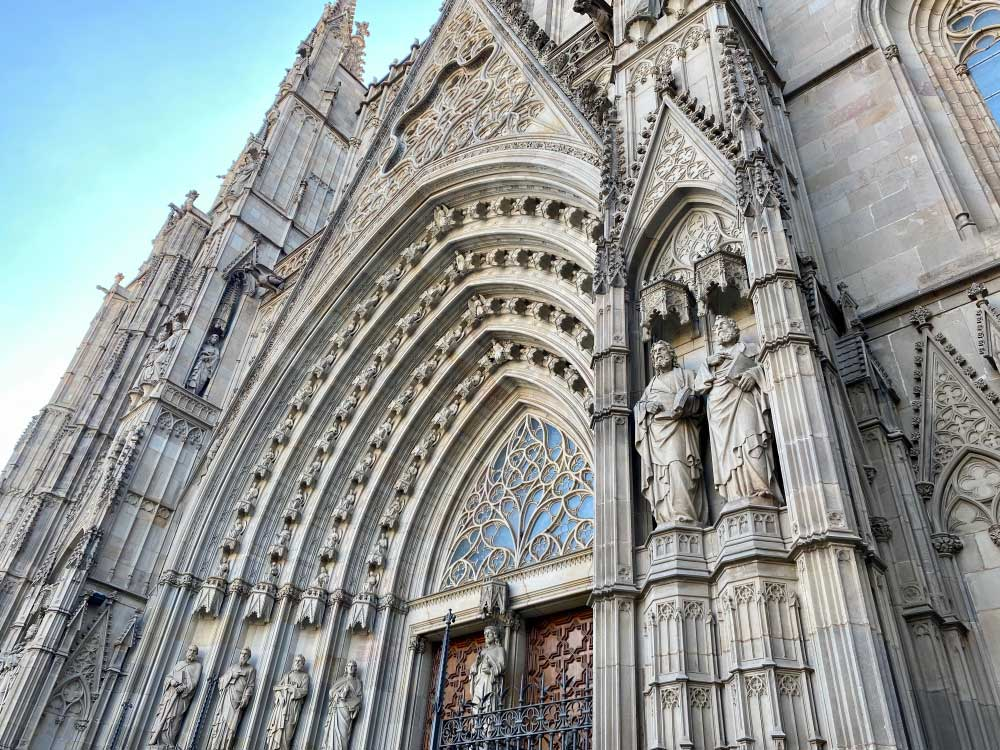
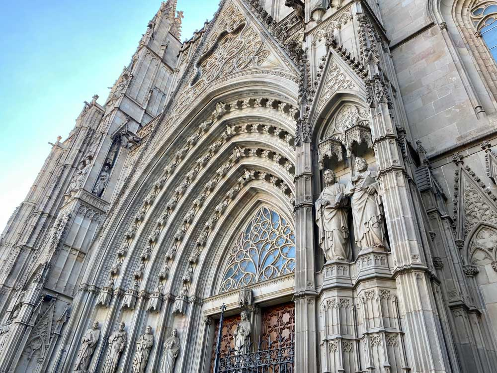
 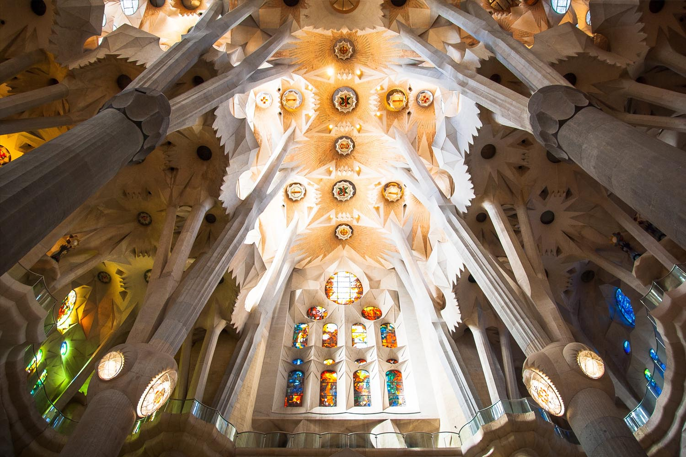
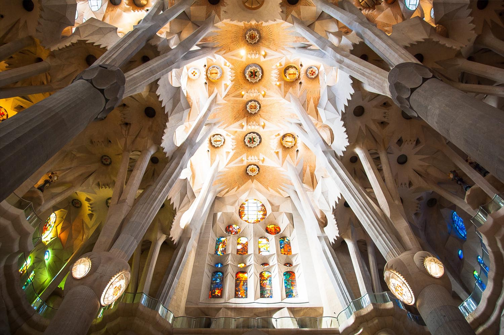
A Taste of Catalonia
Barcelona is a paradise for food lovers, and I couldn’t wait to indulge in its culinary delights. I ventured into La Boqueria, the city’s most famous market, where the vibrant colors and aromas of fresh produce, seafood, and cured meats filled the air. I sampled some delicious jamón ibérico and couldn’t resist trying a freshly made seafood paella at a nearby tapas bar.
In the evening, I treated myself to a traditional Catalan meal at a cozy restaurant in the El Born district. The highlight of the meal was the “crema catalana,” a creamy dessert with a caramelized sugar top, similar to crème brûlée but with a distinct Catalan twist.
Barcelona by Night
As the sun set, Barcelona transformed into a city of lights and excitement. I joined the locals for a leisurely evening paseo (walk) along La Rambla, the city’s famous boulevard. The atmosphere was electric, with street performers, artists, and musicians adding to the lively ambiance.
To end the night, I visited the Magic Fountain of Montjuïc, where a spectacular light and music show took place. The fountain’s synchronized water jets danced to classical and modern tunes, creating a mesmerizing display that left me spellbound.
 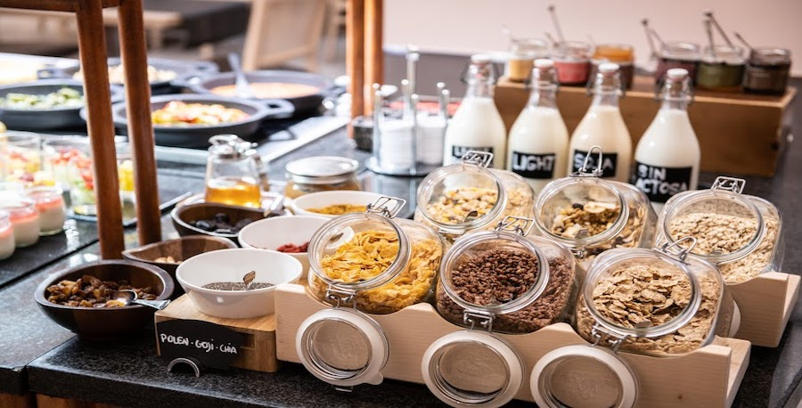
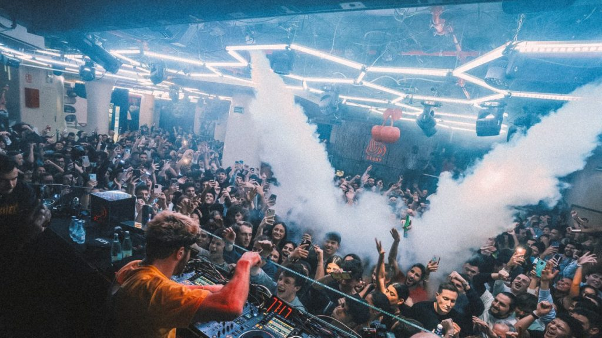
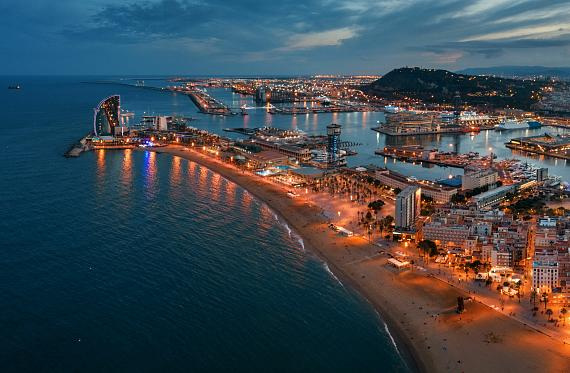
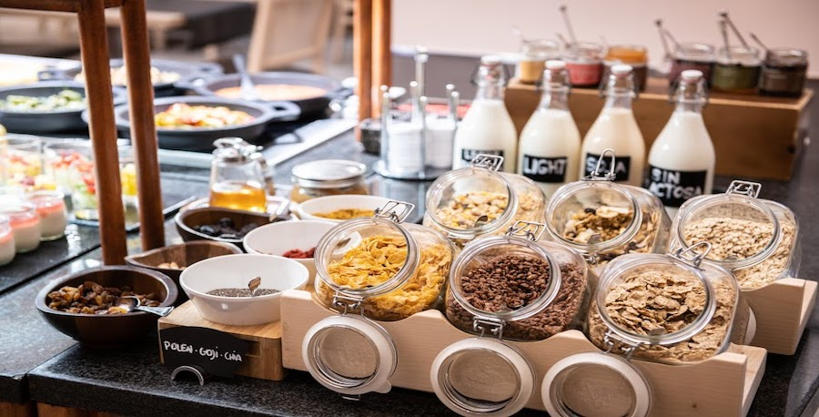
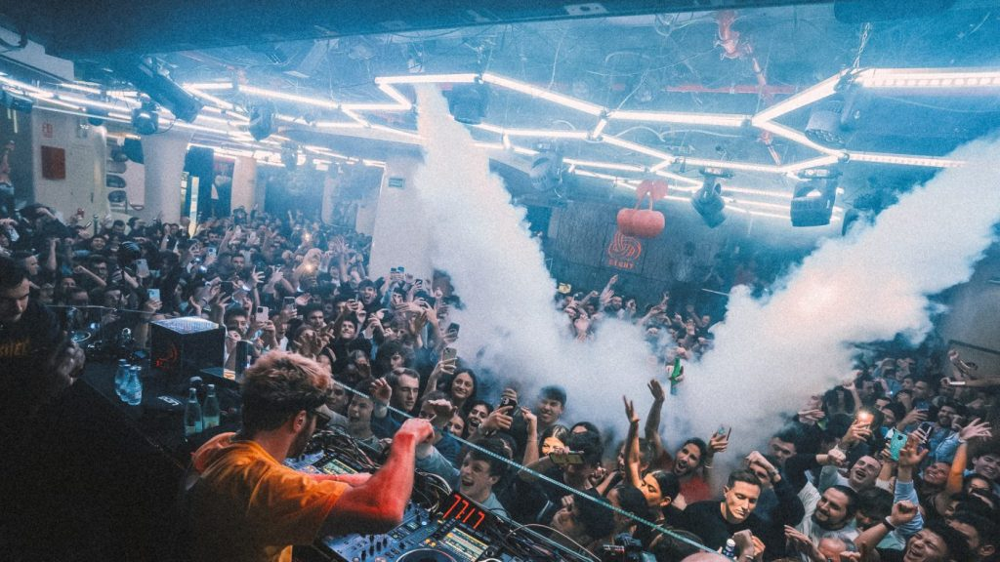
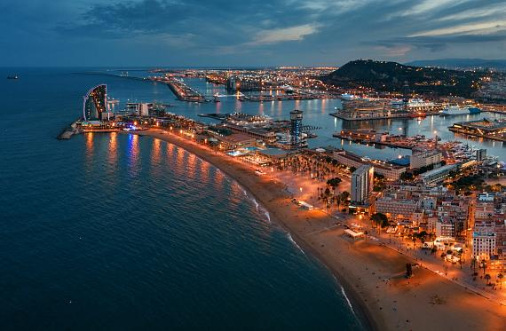
Reflections on Barcelona
Barcelona is a city that never ceases to amaze. It’s a place where history and modernity coexist in harmony, where every street has a story to tell, and where the spirit of creativity is palpable. My adventure in Barcelona reminded me why I fell in love with travel in the first place—it's the thrill of discovering new places, the joy of meeting new people, and the endless inspiration that comes from exploring the world.
If you ever find yourself in Barcelona, let yourself get lost in its magic. Whether it’s your first visit or your tenth, this city has a way of capturing your heart and leaving you with memories that will last a lifetime.